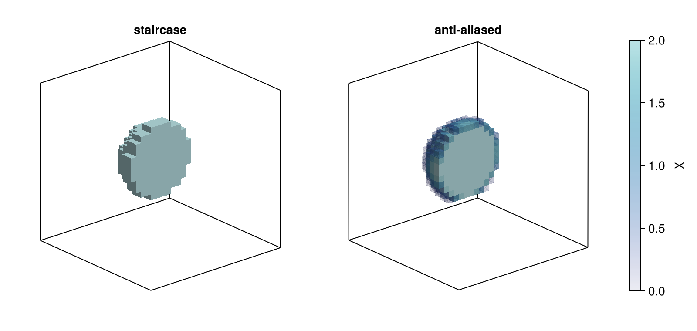
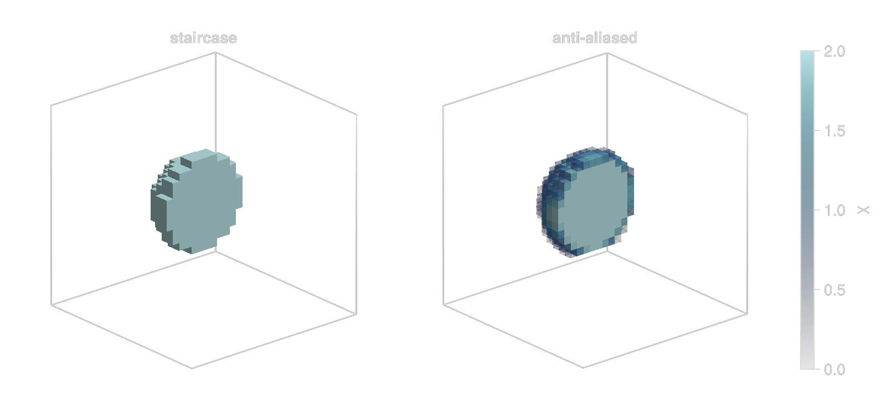
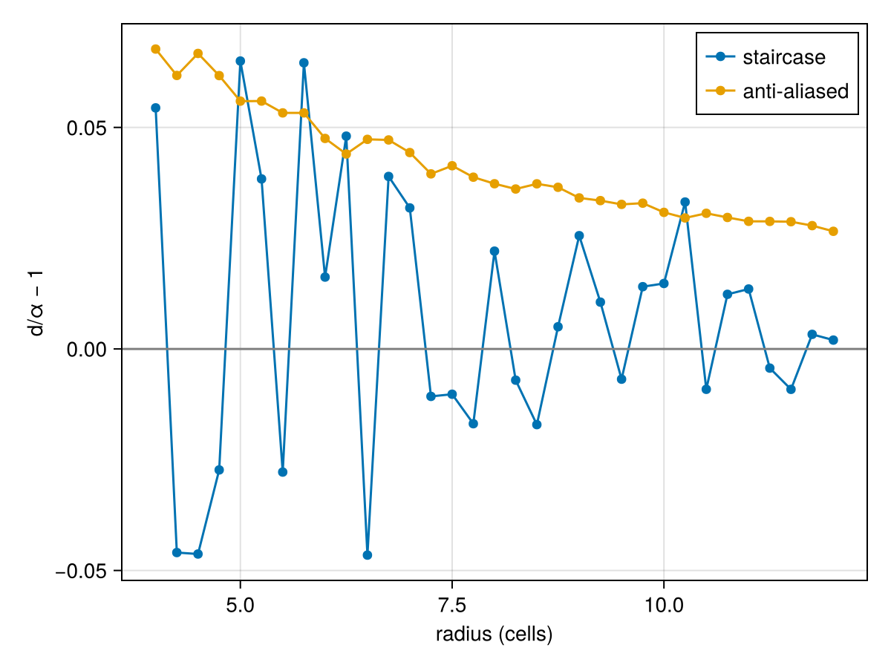
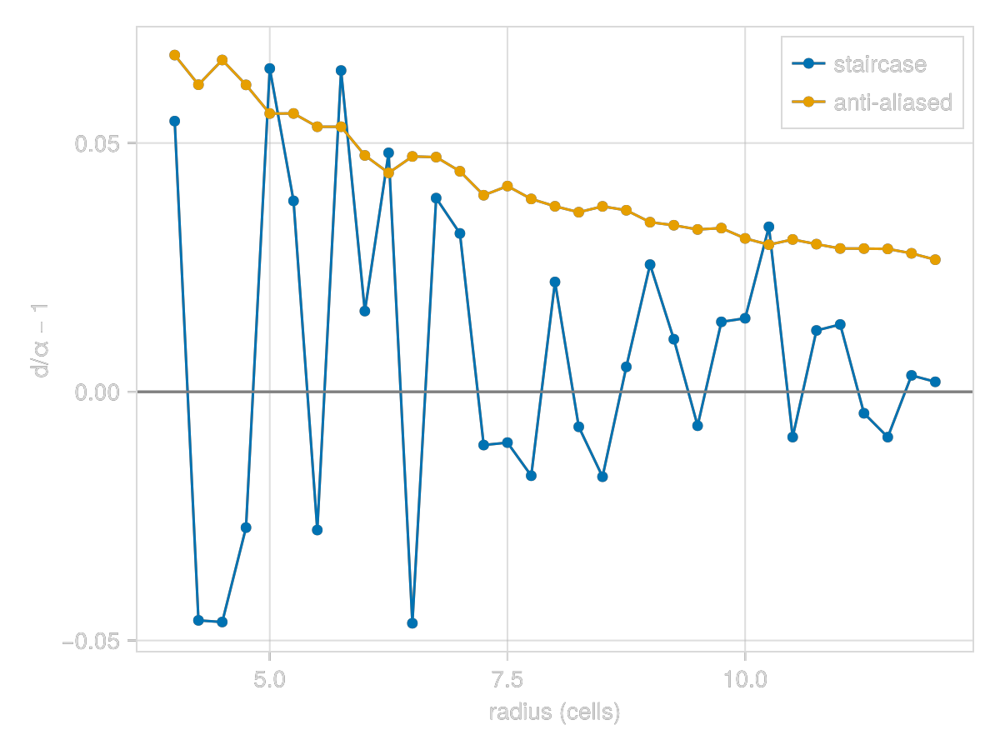
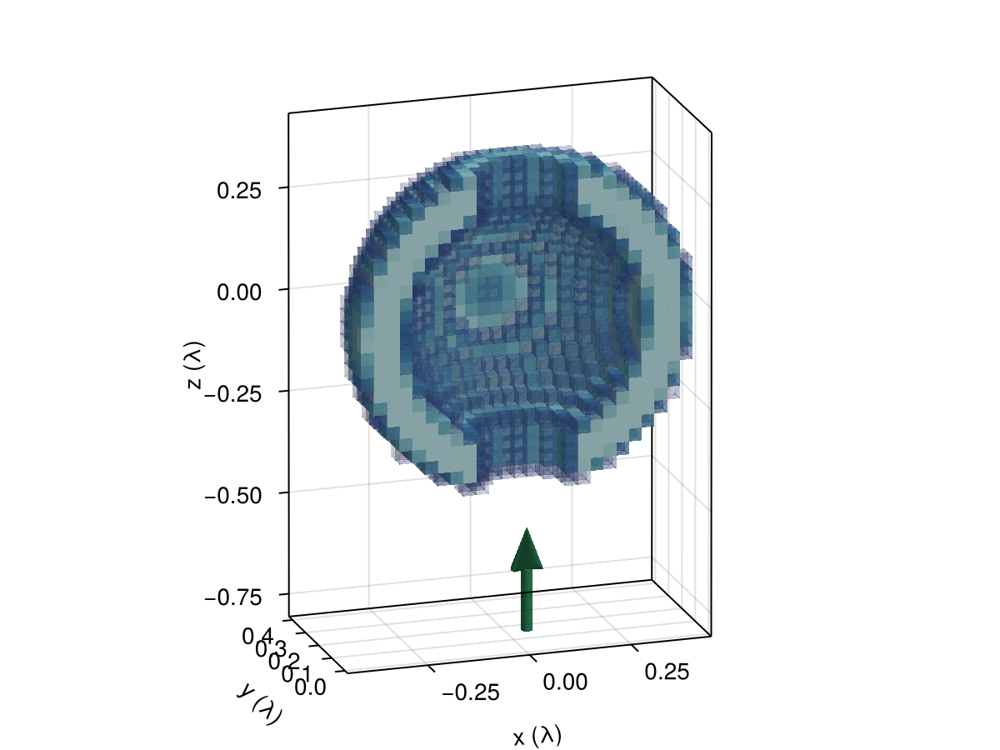
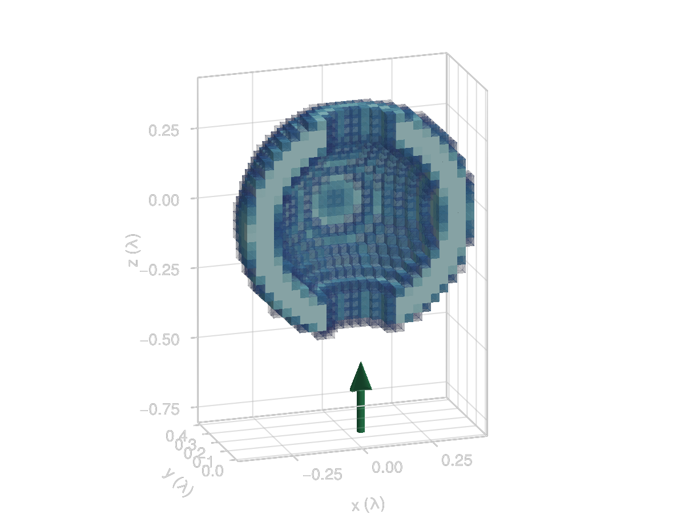
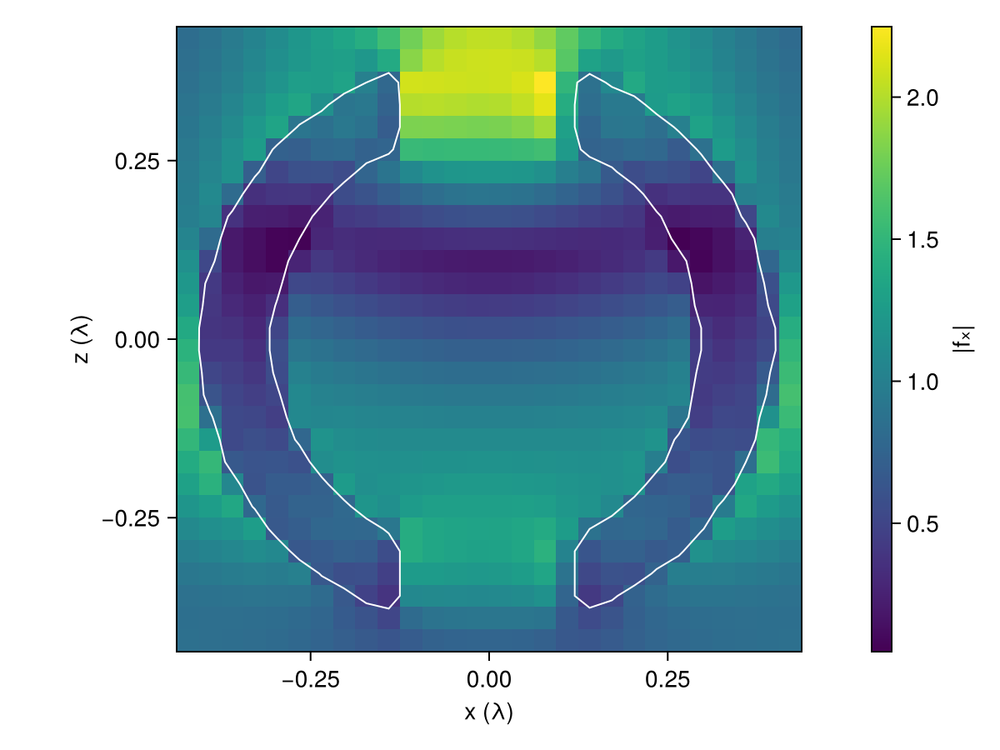
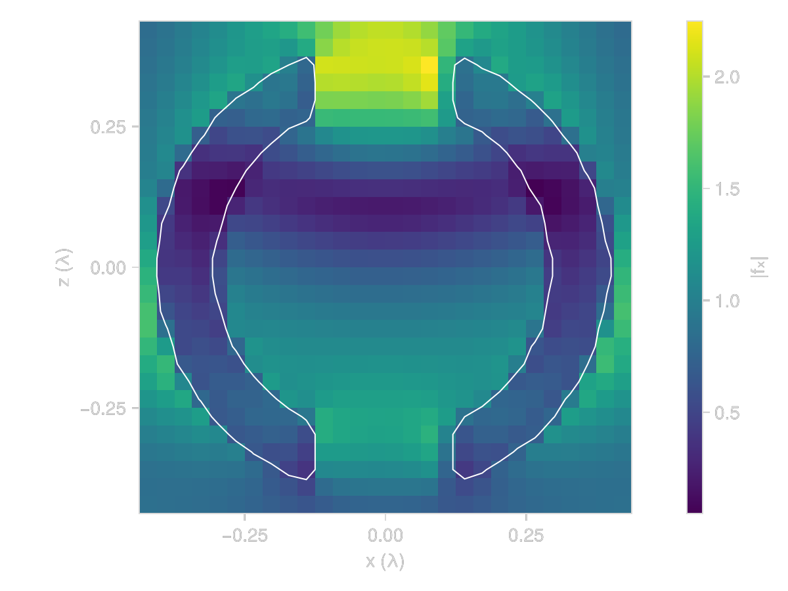

Geometry with VoxelShapes
Up to now we have written every susceptibility as a function of the cell center. This works well for a slab, but a curved surface cuts through cells and each cell ends up either fully in or fully out of the scatterer, which is not ideal. VoxelShapes.jl builds geometry out of shapes and boolean operations on them, and it can blend the cells that a surface cuts through. Gila accepts a VoxelShapes Geometry anywhere it accepts a susceptibility, and it can turn a VoxelShapes grid into a volume. We start with a small sphere, where we know the answer, and then build a drilled bead.
using GilaElectromagnetics, CairoMakieBoth packages export refine, regrid, regions and a few other names, so we import what we need from VoxelShapes by name.
using VoxelShapes: Region, Geometry, FillableSphere, FillableCylinder, csg_diff,
rasterize, NoAntiAliasing, SuperResolutionAntiAliasing, DielectricInterpolationStaircasing and Anti-Aliasing
In the first scattering tutorial we compared the dipole moment of a small sphere of $χ = 2$ with the Clausius–Mossotti polarizability $α = 3Vχ/(χ + 3)$, and most of the error came from the staircase shape of the discretized sphere. Here we look at that error more closely. We keep the sphere at about a hundredth of a wavelength so that the static answer holds, and we drive it with a uniform field along $z$.
Without anti-aliasing, a cell gets the sphere's χ when its center is inside the sphere and zero otherwise, which gives a staircase sphere. SuperResolutionAntiAliasing(4) samples $4^3$ points in each cell and blends the values it finds. DielectricInterpolation says how to blend them, and it blends χ linearly so that a cell half inside the sphere gets half its χ (this is the default linear interpolation, under a name that says what it is for). To see the difference, we plot the same sphere both ways, cut in half, with each cell drawn as a cube colored by its χ and more see-through the emptier it is. Anti-aliasing gives the sphere a soft layer of blended cells on its surface, but the inside is the same.
χ = 2
Δ = 1//1000
sphere = FillableSphere((0.0, 0.0, 0.0), 6.0Δ, χ; interpolation = DielectricInterpolation())
region = Region((26, 26, 26), (Δ, Δ, Δ))Region(26×26×26 cells, scale (1//1000, 1//1000, 1//1000), center (0//1, 0//1, 0//1))icy blues that fade out as χ goes to zero
ice = [RGBAf(c.r, c.g, c.b, α) for (c, α) in zip(cgrad(:ice)[range(0.3, 0.9, 64)], range(0.1, 1, 64))]
cube = Rect3f(Vec3f(-0.5), Vec3f(1))
fig = Figure(size = (800, 380))
for (j, (name, anti_aliasing)) in enumerate((("staircase", NoAntiAliasing()), ("anti-aliased", SuperResolutionAntiAliasing(4))))
χ_half = rasterize(Geometry([sphere], 0.0, anti_aliasing), region)
χ_half[:, 1:13, :] .= 0 # drop the cells with y < 0
cells = findall(>(0), χ_half)
ax = Axis3(fig[1, j]; title = name, aspect = :data)
hidedecorations!(ax)
meshscatter!(ax, Point3f.(Tuple.(cells)); marker = cube, markersize = 1, color = χ_half[cells], colormap = ice, colorrange = (0, χ))
limits!(ax, 0, 26, 0, 26, 0, 26)
end
Colorbar(fig[1, 3]; colormap = ice, limits = (0, χ), label = "χ")
fig

We fix the cells and sweep the radius from 4 to 12 cells. The vacuum operator only depends on the volume, so we build it once and only the susceptibility changes from one radius to the next. The second argument of Geometry is the background value, i.e., the χ of every cell no shape claims, which here is vacuum.
volume = GlaVol((26, 26, 26), (Δ, Δ, Δ))
ΔV = prod(volume.scl) # volume.scl holds the cell sizes
G₀ = VacuumGreenOperator(volume)
f_inc = discretize!(zeros(volume), r -> (0, 0, 1))
radii = (4:0.25:12) .* Δ
function dipole_error(a, anti_aliasing)
sphere = FillableSphere((0.0, 0.0, 0.0), a, χ; interpolation = DielectricInterpolation())
W = ScatteringOperator(G₀, Geometry([sphere], 0.0, anti_aliasing))
X = sus(W)
p_d = X * f_inc
p_s = W * p_d
dipole = real(sum(regionview(p_s, 1)[:, :, :, 3])) * ΔV # z component, summed over the cells
α = 3 * (4π / 3 * a^3) * χ / (χ + 3)
return dipole / α - 1
end;
staircase = [dipole_error(a, NoAntiAliasing()) for a in radii]
blended = [dipole_error(a, SuperResolutionAntiAliasing(4)) for a in radii];
fig = Figure()
ax = Axis(fig[1, 1]; xlabel = "radius (cells)", ylabel = "d/α − 1")
scatterlines!(ax, radii ./ Δ, staircase; label = "staircase")
scatterlines!(ax, radii ./ Δ, blended; label = "anti-aliased")
hlines!(ax, 0; color = :gray)
axislegend(ax)
fig

The staircase error jumps by several percent between radii only a quarter of a cell apart, depending on which cells the surface happens to cross. With anti-aliasing the error becomes a much smoother function of the radius, which is what matters when we sweep or optimize a shape, since a small change of the geometry now gives a small change of the answer. It does not get rid of the error however, and the blended sphere stays above Clausius–Mossotti by an amount that falls off like one over the radius, so the error times the radius in cells stays in a narrow band.
extrema(blended .* radii ./ Δ)(0.2623722982754915, 0.330307361740096)This is because blending χ linearly is correct for the component of the field parallel to the surface, but it overestimates the response to the normal component (which should use the harmonic mean of $1 + χ$). The surface of a sphere sees both, and so the blended sphere polarizes a little too much.
A Drilled Bead
Shapes combine with csg_diff, csg_union and csg_intersect. Our bead is a shell of $n = 2$ ($χ = 3$) with a channel drilled through it along $z$. A VoxelShapes Region is a block of cells much like a GlaVol, and GlaVol(region) converts one into the other. This time we rasterize the geometry into an array ourselves, so that we can plot it as well as hand it to Gila.
χ_bead = 3.0
shell = csg_diff(FillableSphere((0.0, 0.0, 0.0), 0.4, χ_bead), FillableSphere((0.0, 0.0, 0.0), 0.3, χ_bead))
bead = csg_diff(shell, FillableCylinder((0.0, 0.0, 0.0), 0.12, 0.5, χ_bead))
region = Region((28, 28, 28), (1//32, 1//32, 1//32), (0//1, 0//1, 0//1))
volume = GlaVol(region)
χ_cells = rasterize(Geometry([bead], 0.0, SuperResolutionAntiAliasing(4)), region);If we take away the front half of the bead we can see the shell and the channel drilled through it. The arrow is the direction of the plane wave we send in, which comes up the channel from below.
χ_half = copy(χ_cells)
χ_half[:, 1:14, :] .= 0 # drop the cells with y < 0
cells = findall(>(0), χ_half)
x = Float64.(volume.grd[1]) # cell centers along each axis (the box is a cube)
fig = Figure()
ax = Axis3(fig[1, 1]; aspect = :data, xlabel = "x (λ)", ylabel = "y (λ)", zlabel = "z (λ)", azimuth = 1.4π, elevation = 0.1π)
meshscatter!(ax, [Point3f(x[i], x[j], x[k]) for (i, j, k) in Tuple.(cells)]; marker = cube, markersize = 1 / 32,
color = χ_half[cells], colormap = ice, colorrange = (0, χ_bead))
arrows3d!(ax, [Point3f(0, 0, -0.75)], [Vec3f(0, 0, 0.25)]; color = :seagreen)
fig

A plane wave polarized along $x$ comes up the channel. As in the first scattering tutorial, the scattering operator takes the driving current density $\mathsf{p}_\text{d} = \mathsf{X} \mathsf{f}_\text{inc}$ and returns the scattered current density $\mathsf{p}_\text{s}$, and the vacuum operator turns that into the scattered field $\mathsf{f}_\text{s} = \mathsf{G}_\circ \mathsf{p}_\text{s}$.
G₀ = VacuumGreenOperator(volume)
W = ScatteringOperator(G₀, χ_cells)
X = sus(W)
f_inc = discretize!(zeros(volume), r -> (1, 0, 0) .* cis(2π * r[3]))
p_d = X * f_inc
p_s = W * p_d
f_s = G₀ * p_s
f_t = f_inc + f_s;We plot the $x$ component of the total field in the $xz$ plane through the middle of the bead ($y$ index 14 of 28, just behind the cut above), with the outline of the bead in white.
z = Float64.(volume.grd[3])
mid = 14
fig = Figure()
ax = Axis(fig[1, 1]; xlabel = "x (λ)", ylabel = "z (λ)", aspect = DataAspect())
hm = heatmap!(ax, x, z, abs.(regionview(f_t, 1)[:, mid, :, 1]))
contour!(ax, x, z, χ_cells[:, mid, :]; levels = [χ_bead / 2], color = :white)
Colorbar(fig[1, 2], hm; label = "|fₓ|")
fig

The shell focuses the wave into a hot spot where the channel leaves the bead at the top.
This page was generated using Literate.jl.